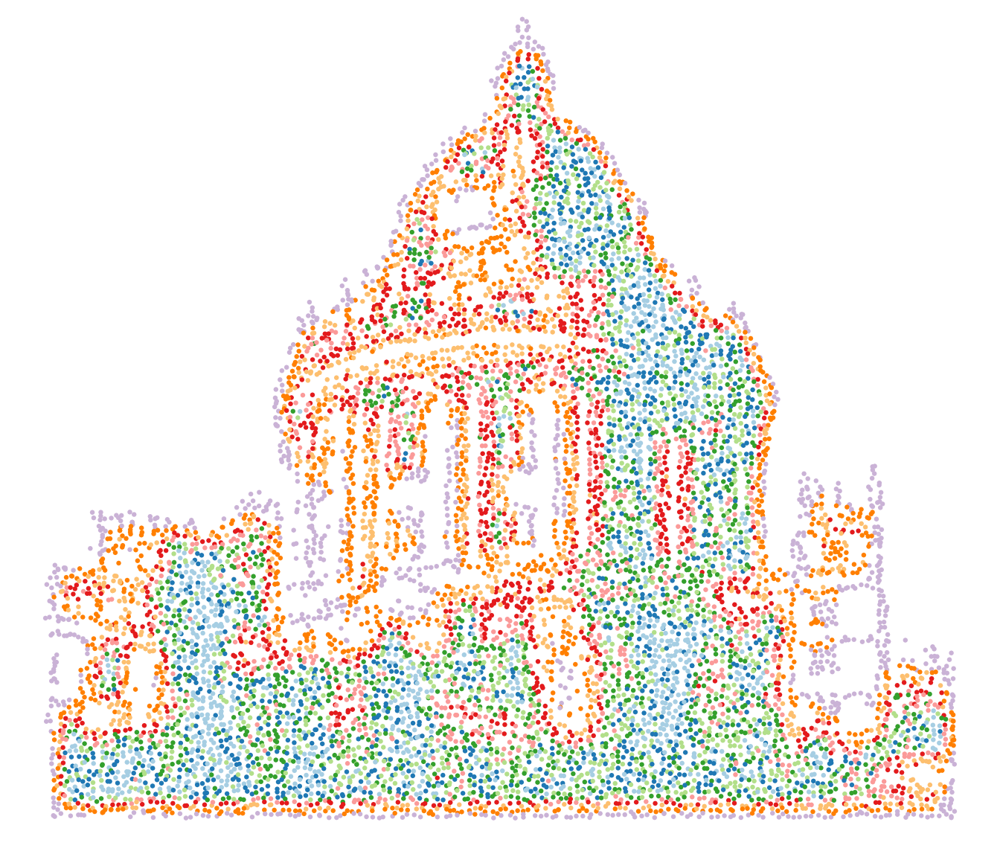
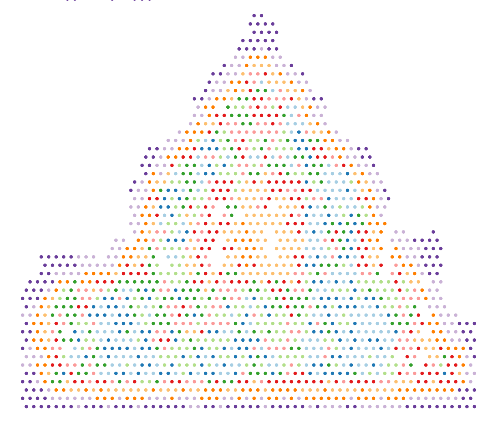

Radcliffe Camera
Kevin Rue-Albrecht
MRC WIMM Centre for Computational Biology, University of Oxford, Oxford, OX3 9DS, UKkevinrue67@gmail.com
16 July 2025
Source:vignettes/radcliffe-camera.Rmd
radcliffe-camera.RmdCompiled date: 2025-07-16
Last edited: 2020-04-20
License: MIT + file LICENSE
Introduction
spotify is an R package.
Once installed, the package can be loaded and attached to your current workspace as follows:
Other helpful libraries.
Demonstration
Input file
input_file <- tempfile(fileext = ".jpg")
dir.create(dirname(input_file))
download.file(url = "https://lh3.googleusercontent.com/p/AF1QipOCPWTCh3keAMBioweiqUf0PZHOaxIUCekJThB9=s1360-w1360-h1020", destfile = input_file)Output types
Flattened image
radcliffe_camera <- spotify(
path = input_file,
return.type = "flatten",
extras = list(
image_flatten = list(operator = "Modulate")
)
)
print(radcliffe_camera)
#> # A tibble: 1 × 7
#> format width height colorspace matte filesize density
#> <chr> <int> <int> <chr> <lgl> <int> <chr>
#> 1 JPEG 1209 1020 sRGB FALSE 0 72x72Image data
radcliffe_camera <- spotify(
path = input_file,
return.type = "data"
)
radcliffe_camera
#> 3 channel 1209x1020 bitmap array: 'bitmap' raw [1:3, 1:1209, 1:1020] ff ff ff ff ...

Jittered scatter plot
spotify(
path = input_file,
return.type = "jitter",
downsample = 100,
jitter = 5
) + theme_void()
Xenium-like
spotify(
path = input_file,
return.type = "spatial",
downsample = 150,
jitter = 3,
point.size = 0.5,
extras = list(
cluster = list(k.nn = 50, k.cluster = 9)
)
) +
coord_cartesian(ylim = c(NA, -90)) +
theme_void() + guides(colour = "none") +
scale_colour_brewer(palette = "Paired")
Visium-like
spotify(
path = input_file,
return.type = "visium",
downsample = 200,
point.size = 0.1,
extras = list(
cluster = list(k.nn = 50, k.cluster = 10)
)
) +
coord_cartesian(ylim = c(NA, -90)) +
theme_void() + guides(colour = "none") +
scale_colour_brewer(palette = "Paired")
Additional information
The GitHub repository contains the development version of the package, where new functionality is added over time. The authors appreciate well-considered suggestions for improvements or new features, or even better, pull requests.
If you use spotify for your analysis, please cite it as shown below:
citation("spotify")
#> To cite package 'spotify' in publications use:
#>
#> Rue-Albrecht K (2024). _spotify: Spotify Your Images_. R package
#> version 0.1.0, <https://kevinrue.github.io/spotify>.
#>
#> A BibTeX entry for LaTeX users is
#>
#> @Manual{,
#> title = {spotify: Spotify Your Images},
#> author = {Kevin Rue-Albrecht},
#> year = {2024},
#> note = {R package version 0.1.0},
#> url = {https://kevinrue.github.io/spotify},
#> }Session Info
sessionInfo()
#> R version 4.5.1 (2025-06-13)
#> Platform: x86_64-pc-linux-gnu
#> Running under: Ubuntu 24.04.2 LTS
#>
#> Matrix products: default
#> BLAS: /usr/lib/x86_64-linux-gnu/openblas-pthread/libblas.so.3
#> LAPACK: /usr/lib/x86_64-linux-gnu/openblas-pthread/libopenblasp-r0.3.26.so; LAPACK version 3.12.0
#>
#> locale:
#> [1] LC_CTYPE=en_US.UTF-8 LC_NUMERIC=C
#> [3] LC_TIME=en_US.UTF-8 LC_COLLATE=en_US.UTF-8
#> [5] LC_MONETARY=en_US.UTF-8 LC_MESSAGES=en_US.UTF-8
#> [7] LC_PAPER=en_US.UTF-8 LC_NAME=C
#> [9] LC_ADDRESS=C LC_TELEPHONE=C
#> [11] LC_MEASUREMENT=en_US.UTF-8 LC_IDENTIFICATION=C
#>
#> time zone: UTC
#> tzcode source: system (glibc)
#>
#> attached base packages:
#> [1] stats graphics grDevices utils datasets methods base
#>
#> other attached packages:
#> [1] ggplot2_3.5.2 spotify_0.1.0 BiocStyle_2.36.0
#>
#> loaded via a namespace (and not attached):
#> [1] rlang_1.1.6 magrittr_2.0.3
#> [3] shinydashboard_0.7.3 clue_0.3-66
#> [5] GetoptLong_1.0.5 matrixStats_1.5.0
#> [7] compiler_4.5.1 mgcv_1.9-3
#> [9] png_0.1-8 systemfonts_1.2.3
#> [11] vctrs_0.6.5 pkgconfig_2.0.3
#> [13] shape_1.4.6.1 crayon_1.5.3
#> [15] fastmap_1.2.0 magick_2.8.7
#> [17] XVector_0.48.0 labeling_0.4.3
#> [19] fontawesome_0.5.3 utf8_1.2.6
#> [21] promises_1.3.3 rmarkdown_2.29
#> [23] UCSC.utils_1.4.0 shinyAce_0.4.4
#> [25] ragg_1.4.0 xfun_0.52
#> [27] cachem_1.1.0 GenomeInfoDb_1.44.0
#> [29] jsonlite_2.0.0 listviewer_4.0.0
#> [31] later_1.4.2 DelayedArray_0.34.1
#> [33] parallel_4.5.1 cluster_2.1.8.1
#> [35] R6_2.6.1 bslib_0.9.0
#> [37] RColorBrewer_1.1-3 GenomicRanges_1.60.0
#> [39] jquerylib_0.1.4 Rcpp_1.1.0
#> [41] bookdown_0.43 SummarizedExperiment_1.38.1
#> [43] iterators_1.0.14 knitr_1.50
#> [45] IRanges_2.42.0 httpuv_1.6.16
#> [47] Matrix_1.7-3 splines_4.5.1
#> [49] igraph_2.1.4 tidyselect_1.2.1
#> [51] abind_1.4-8 yaml_2.3.10
#> [53] doParallel_1.0.17 codetools_0.2-20
#> [55] miniUI_0.1.2 lattice_0.22-7
#> [57] tibble_3.3.0 withr_3.0.2
#> [59] Biobase_2.68.0 shiny_1.11.1
#> [61] evaluate_1.0.4 desc_1.4.3
#> [63] circlize_0.4.16 pillar_1.11.0
#> [65] BiocManager_1.30.26 MatrixGenerics_1.20.0
#> [67] DT_0.33 foreach_1.5.2
#> [69] stats4_4.5.1 shinyjs_2.1.0
#> [71] generics_0.1.4 dbscan_1.2.2
#> [73] iSEE_2.20.0 S4Vectors_0.46.0
#> [75] scales_1.4.0 xtable_1.8-4
#> [77] glue_1.8.0 tools_4.5.1
#> [79] colourpicker_1.3.0 fs_1.6.6
#> [81] grid_4.5.1 colorspace_2.1-1
#> [83] SingleCellExperiment_1.30.1 nlme_3.1-168
#> [85] GenomeInfoDbData_1.2.14 vipor_0.4.7
#> [87] cli_3.6.5 textshaping_1.0.1
#> [89] viridisLite_0.4.2 S4Arrays_1.8.1
#> [91] ComplexHeatmap_2.24.1 dplyr_1.1.4
#> [93] gtable_0.3.6 rintrojs_0.3.4
#> [95] sass_0.4.10 digest_0.6.37
#> [97] BiocGenerics_0.54.0 SparseArray_1.8.0
#> [99] ggrepel_0.9.6 rjson_0.2.23
#> [101] htmlwidgets_1.6.4 farver_2.1.2
#> [103] htmltools_0.5.8.1 pkgdown_2.1.3
#> [105] lifecycle_1.0.4 shinyWidgets_0.9.0
#> [107] httr_1.4.7 GlobalOptions_0.1.2
#> [109] mime_0.13